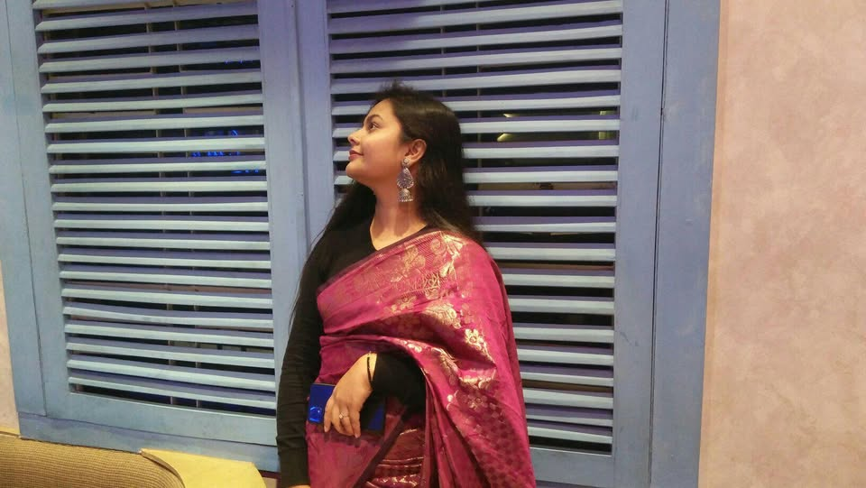
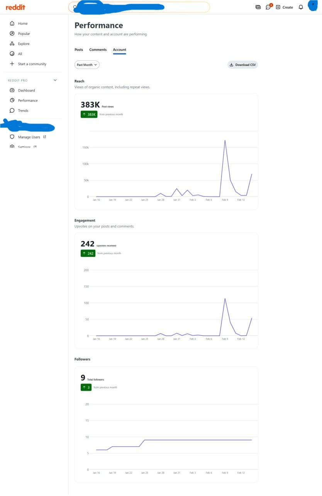
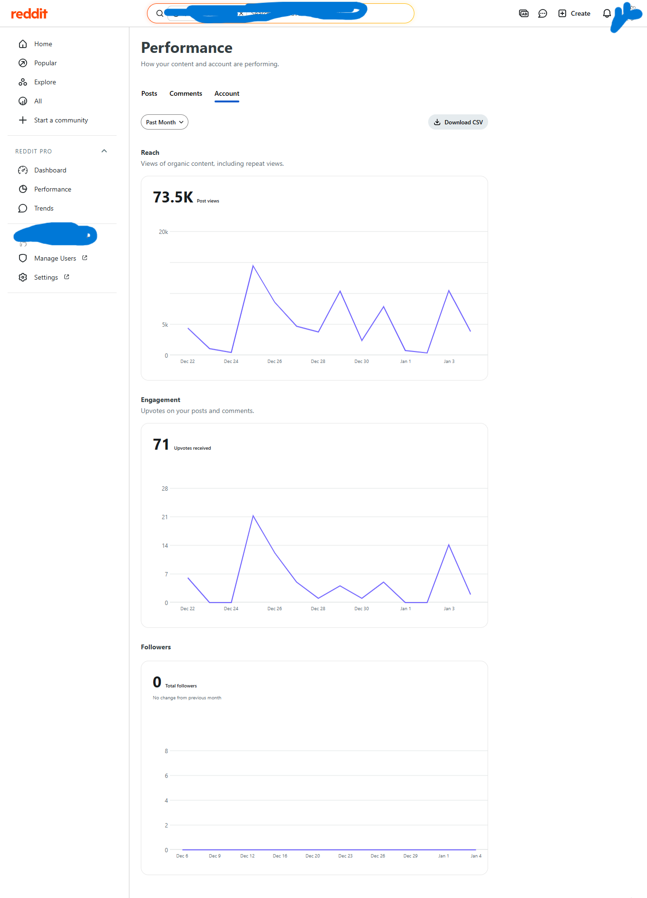
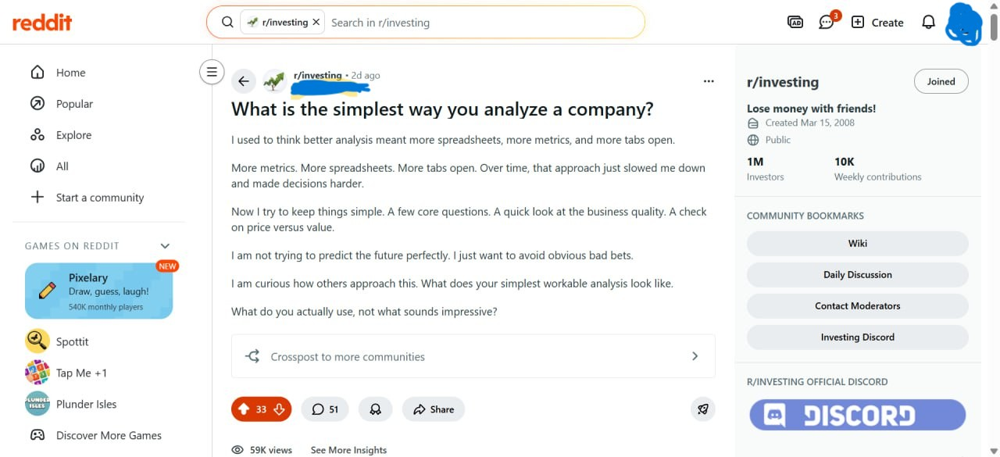
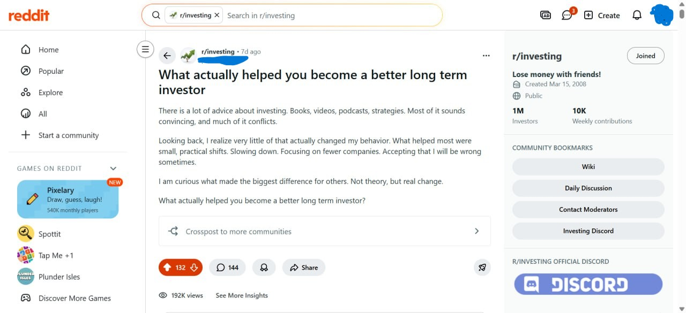

Social Media Manager | Reddit Organic Growth Expert
I am a passionate Social Media Manager with expertise in Reddit-based organic growth, content writing, and brand mentions. I am a quick learner and adaptable professional, always eager to explore new strategies and tools to drive results. I have successfully driven engagement and visibility for clients by creating conversational content that builds trust and long-term brand presence. My community-first approach focuses on understanding audience behavior and niche communities.
Excited to bring my skills to Olynex for sustainable brand authority!
Reddit strategies to increase visibility without paid ads.
Conversational posts that engage communities.
Strategic mentions to boost brand recognition.
Performance tracking and compliance.
Duration: 2022 - Present
Description: Managed Reddit communities for clients, creating content that increased engagement by 60% and drove 50,000+ views. Focused on brand mentions in niche subreddits, resulting in higher organic traffic and trust-building discussions.
    View Reddit ProfileLet's discuss how I can help with your social media goals!